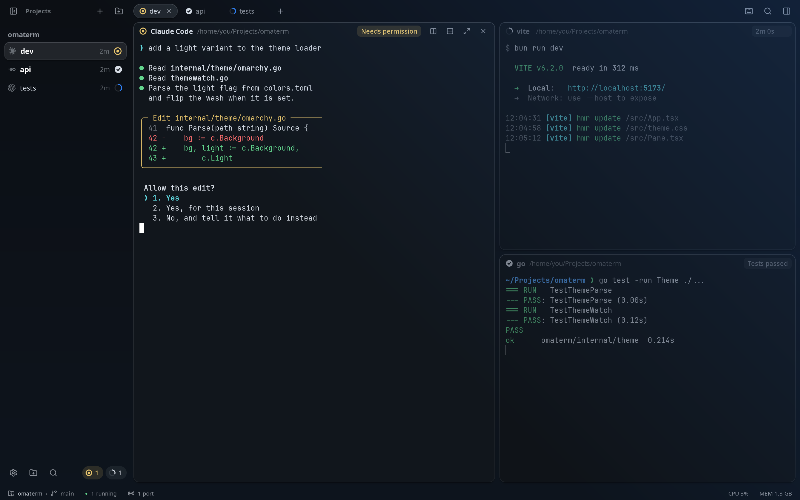
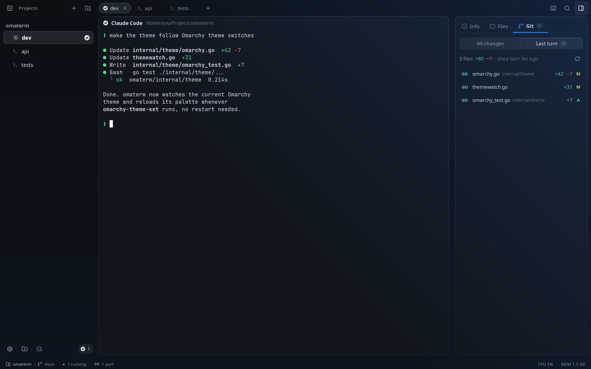
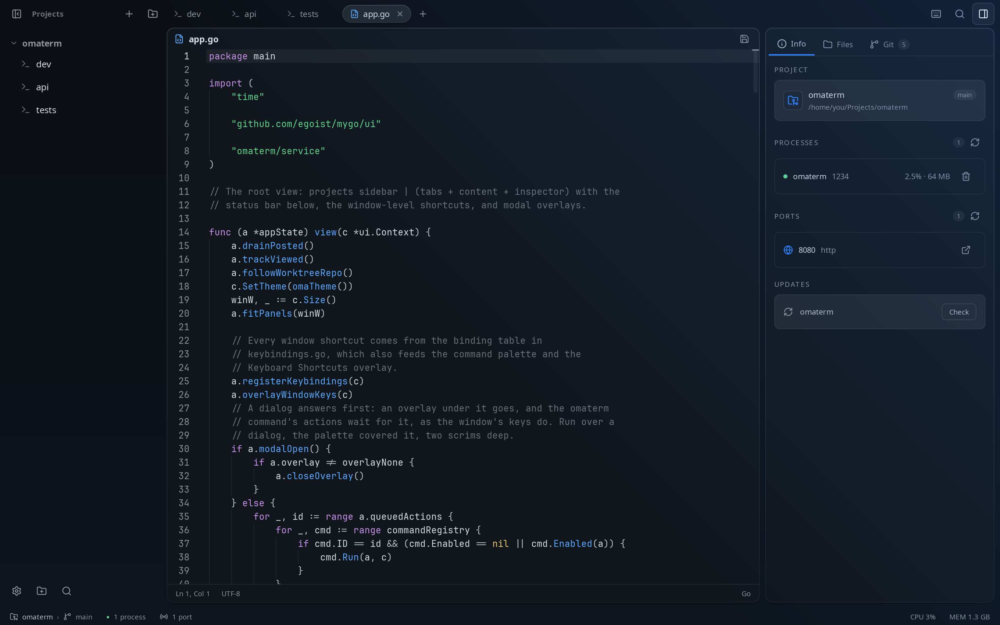
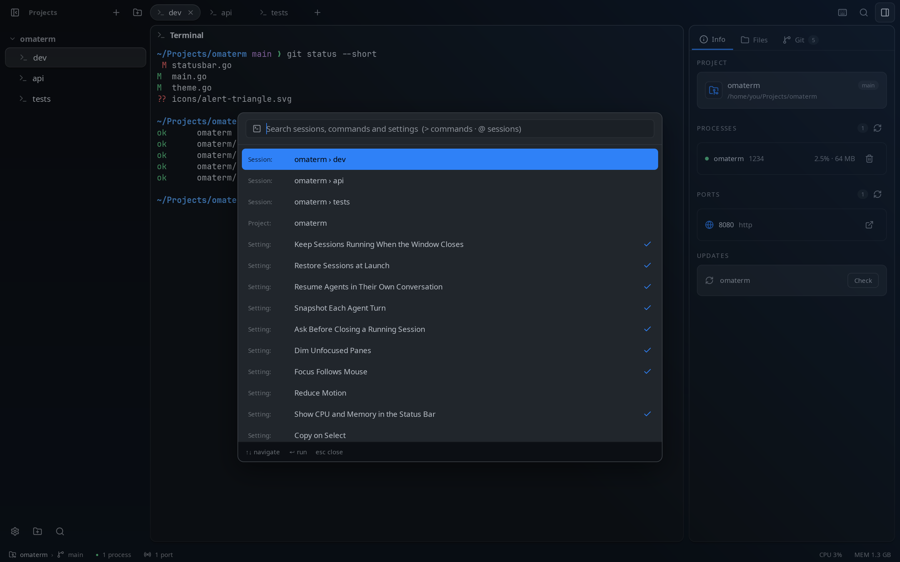

status
See which agent needs you
Every session shows whether it is working, needs you, failed or is done. When an agent asks for permission while you are looking elsewhere, you get a notification. Press Ctrl+Shift+J to jump straight to it.

changes
What did that turn change?
In the Git tab, Last turn lists what an agent changed in its last turn, apart from everything else you haven’t committed. You can keep or revert each hunk.
From a script or another agent, omaterm diff --turn prints the same diff.

sessions
Close the window. Your sessions keep running.
A session daemon keeps your shells and agents running after you close the window, and shows them as they are when you open it again.
- After a reboot, Claude Code, Codex, OpenCode and Pi resume the same conversation
- Run the daemon as a systemd user service so your sessions come back when you log in
- Switching projects keeps the other project's shells running

web access
Check on your agents from your phone
Turn on web access and your sessions open in a browser: which agents are working or need you, and any pane as a live terminal you can type into. omaterm serves it on your machine only; carry it with tailscale serve or cloudflared. A browser sees nothing until you pair it by scanning a QR code, and you can sign any device out.
themes
Themes, dark and light
Pick a dark or light theme from the command palette. The window, the terminals and the editors share one palette, and its colors are checked for contrast so text stays readable. On Omarchy, omaterm uses the active Omarchy theme and follows when you switch, with no restart needed.


workspace
Git, diffs and an editor in the same window




- Split panes
- Split right or down, resize by the dividers, zoom one pane, and drag a header onto another pane to move it.
- Browser panes
- Open your dev server next to your shells. Agents can read the page, click, type and take screenshots.
- Git panel
- Stage, commit, amend, stash, fetch, pull and push, across every repository in the project.
- Go to file and search
- Find a file with Ctrl+P and search the whole project with Ctrl+Shift+F.
- Updates itself
- Signed updates arrive inside the app, with release notes written for you.
- Native
- A native app written in Go. It runs on Linux first, and also on macOS and Windows.
cli
Agents can drive it too
The omaterm command lets agents and scripts open panes, run commands, wait for them and read the screen. It works even while the window is closed.
omaterm skill setup teaches Claude Code, Codex, Pi and OpenCode to use it.
# run the tests in a new pane below $ pane=$(omaterm split --down -- go test ./...) # wait for them, then read what they printed $ omaterm wait "$pane" --exit || omaterm read "$pane" -n 80 # open the app you just built beside it $ omaterm split --url localhost:5173 # what did my last turn change? $ omaterm diff --turn